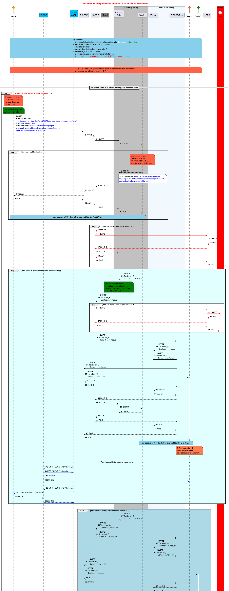

@startuml
Title: <color red> On va creer un Groupchat en faisant un FT vers plusieurs participants
hide footbox
autonumber
Actor ClientA as A #orange
'participant "Reverse\nProxySSL" as PS
'participant "Http Content\n Server" as CS
participant "C-BGF" as CBGF #deepskyblue
participant "Switch\nMSRP" as SW #deepskyblue
participant "P-CSCF" as P
participant "I-CSCF" as I
'participant HSS as H #green
participant "LB-AS" as LB #gray
|||
box "Zone Originating" #silver
participant "S-CSCF\nOrig" as SO
participant "AS-Orig" as ASO
end box
|||
box "Zone terminating" #aliceblue
participant "AS-term" as AST
participant "S-CSCF\Term" as ST
end box
Actor ClientB as B #tomato
Actor ClientC as C #green
|||
participant "i-SBC" as isbc
box "Interco" #red
entity SFR
|||
|||
note over A,C #skyblue : <b>le Scenario</b>:\n- Un groupchat est deja etablie entre les participants <color:white>: Blackbirds</color>et<color:green>C Albatros</color>\n- A envoi un fichier à B ,C en FToHTTP donc:\n- A upload le fichier\n- A envoie l'url de telechargement a B, C.\n- B telecharge le fichier uploadé\n- C est redirigé sur un lien internet vers le fichier.\n <color:red> Rappel: l'Albatros ne peut pas effectuer de FT dans un groupchat </color>
|||
|||
note over A, C#tomato: A upload le fichier telque decrit sur le lien ci-dessus : Upload_successfull\nA recupere les infos à envoyer a B, C
|||
|||
|||
============= Envoi des infos aux autres participants =============
loop <color red> le Chat n'existait pas. on le cree à travers un FT </color>
note over A #tomato: A commence par \n Uploader le fichier\n tel que decrit sur\n le lien ci haut.
note over A #green: This process may take\na while... then after,
A -[#black]> P: INVITE\n<b>Contact include:</b>\n<color blue><+g.3gpp.iari-ref=\"urn%3Aurn-7%3A3gpp-application.ims.iari.rcse.ftottp"</color>\n<color blue>SDP <participants list>\n<b>SDP contains:</b><color blue>a=accept-types:message/cpim</color>\n<color blue>a=accept-wrapped-types:text/plain message/imdn+xml</color>\n<color blue>application/vnd.gsma.rcs-ft-http+xml</color>
P -[#black]> I: INVITE
I -[#black]> SO: INVITE
SO -[#black]> ASO: INVITE
|||
loop Reponse vers l'Originating
note over ASO #tomato: creation de la conf\n sur la CF d'ASIM\n l'AS renvoit l'INVITE\nvers les autres participants
|||
ASO -[#black]-> SO: 200 OK
note over ASO #white: SDP contains:</b><color blue>a=accept-types:message/cpim</color>\n<color blue>a=accept-wrapped-types:text/plain message/imdn+xml</color>\n<color blue>application/vnd.gsma.rcs-ft-http+xml</color>
SO -[#black]-> I: 200 OK
I -[#black]->P: 200 OK
P -[#black]-> A: 200 OK
A --> P: ACK
P --> I: ACK
I --> SO: ACK
SO --> ASO: ACK
note over A , ASO #skyblue: une session MSRP de chat va etre etablit entre A, et L'AS.
end
|||
loop INVITE <isfocus> vers un participant SFR
SO -[#red]> I: <b>INVITE</b>
I -[#red]> isbc: <b>INVITE</b>
isbc -[#red]> SFR: <b>INVITE</b>
isbc <-[#red]-SFR: 200 OK
I <-[#red]- isbc: 200 OK
I -[#red]-> SO: 200 OK
I <-[#red]- SO: ACK
I -[#red]-> isbc: ACK
isbc -[#red]-> SFR: ACK
end
loop #lightcyan INVITE vers le participant Blackbird en Terminating
ASO -[#black]> SO: <b>INVITE</b>\nTo: tel-uri_B\n Contact:...,<isfocus>
note over SO #green: Une optimisation NSN \npermet de router directement\n l'INVITE vers les SCSCF_Term\n pour les Clients OF
SO -[#black]> I: <b>INVITE</b>\nTo: tel-uri_B\n Contact:...,<isfocus>
loop #white INVITE <isfocus> vers un participant SFR
I -[#red]> isbc: <b>INVITE</b>
isbc -[#red]> SFR: <b>INVITE</b>
isbc <-[#red]-SFR: 200 OK
I <-[#red]- isbc: 200 OK
I -[#red]-> isbc: ACK
isbc -[#red]-> SFR: ACK
end
I -[#black]> ST: <b>INVITE</b>\nTo: tel-uri_B\n Contact: ...,<isfocus>
ST -[#black]> AST: <b>INVITE</b>\nTo: tel-uri_B\n Contact:...,<isfocus>
AST -[#black]> ST: <b>INVITE</b>\nTo: tel-uri_B\n Contact:...,<isfocus>
ST -[#black]> P: <b>INVITE</b>\nTo: tel-uri_B\n Contact:...,<isfocus>
P -[#black]> B: <b>INVITE</b>\nTo: tel-uri_B\n Contact:...,<isfocus>
activate B
P <-- B: 200 OK
ST <-- P: 200 OK
AST <-- ST: 200 OK
AST --> ST: 200 OK
ST --> I: 200 OK
I --> SO: 200 OK
SO --> ASO: 200 OK
ASO --> SO: ACK
SO --> I: ACK
I --> ST: ACK
ST --> AST: ACK
AST --> ST: ACK
ST --> P: ACK
P --> B: ACK
deactivate B
note over B , ASO #skyblue: Un session MSRP de chat va etre etablit entre B et l'AS.
note over B #coral: Si B a <accepté>, il\n telecharge le fichier.\nSa progressbar s'incremente.
|||
... Renvoi des notifications dans la session msrp ...
B -[#blue]> CBGF : MSRP SEND (imdn/delivery)
SW <[#blue]- CBGF: MSRP SEND (imdn/delivery)
activate SW
CBGF <-[#blue]- SW: 200 OK
B <-[#blue]- CBGF:200 OK
deactivate SW
|||
SW -[#blue]> CBGF: MSRP SEND (imdn/delivery)
A <[#blue]- CBGF: MSRP SEND (imdn/delivery)
activate SW
CBGF <-[#blue]- A: 200 OK
CBGF -[#blue]-> SW: 200 OK
deactivate SW
end
|||
loop #lightblue INVITE vers le participant Albatros en Terminating
ASO -[#black]> SO: <b>INVITE</b>\nTo: tel-uri_C\n Contact:...,<isfocus>
SO -[#black]> I: <b>INVITE</b>\nTo: tel-uri_C\n Contact:...,<isfocus>
I -[#black]> ST: <b>INVITE</b>\nTo: tel-uri_C\n Contact: ...,<isfocus>
ST -[#black]> AST: <b>INVITE</b>\nTo: tel-uri_C\n Contact:...,<isfocus>
AST -[#black]> ST: <b>INVITE</b>\nTo: tel-uri_C\n Contact:...,<isfocus>
ST -[#black]> P: <b>INVITE</b>\nTo: tel-uri_C\n Contact:...,<isfocus>
P -[#black]> C: <b>INVITE</b>\nTo: tel-uri_C\n Contact:...,<isfocus>
activate C
P <-- C: 200 OK
ST <-- P: 200 OK
AST <-- ST: 200 OK
AST --> ST: 200 OK
ST --> I: 200 OK
I --> SO: 200 OK
SO --> ASO: 200 OK
ASO --> SO: ACK
SO --> I: ACK
I --> ST: ACK
ST --> AST: ACK
AST --> ST: ACK
ST --> P: ACK
P --> B: ACK
deactivate C
note over C , ASO #skyblue: Un session MSRP de chat va etre etablit entre C et l'AS.
note over C #coral: C a reçu un lien qu'il\n peut cliquer et aller sur\nInternet
end
|||
|||
note over A, C #skyblue: La session MSRP est etablit entre les participants du GC.\n les prochains messages et notifications y seront envoyés\n les blackbirds feront du FToHTTP\n les Hot fixes ne feront jamais de FT dans le GC.
end
@enduml